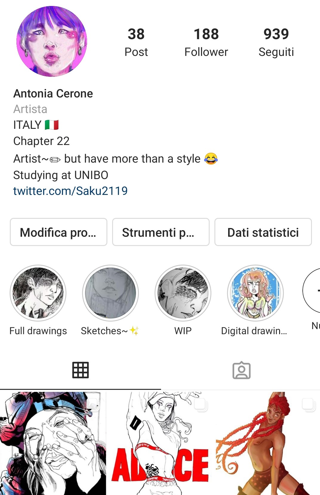

ABOUT

Ciao!
Sono Antonia e sono una studentessa universitaria, frequentante il corso di Scienze della Comunicazione all’università di Bologna.
Ho sempre amato disegnare e spero che un giorno riesca a fare di questa passione un lavoro. Il mio stile è ispirato a quello di artisti come Alessando Barbucci, Mirkand, Alessia Martusciello e vari fumettisti giapponesi.
Saku è un personaggio che ho creato durante la mia adolescenza, una sorta di mio alter ego, con gusti e un carattere simili ai miei; per questo motivo Saku World è un progetto molto importante per me.
Spero che il mondo e i personaggi da me creati possano piacervi e divertirvi!
Visitate il mio account Instagram per saperne di più su di me!